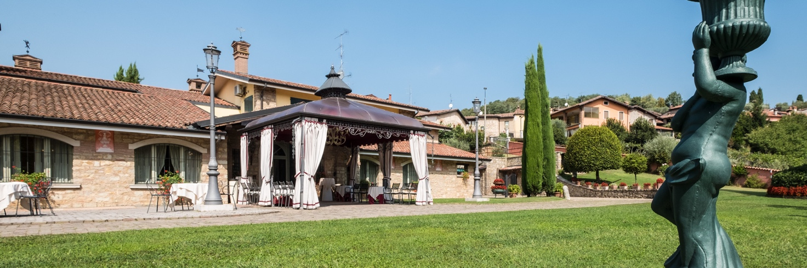
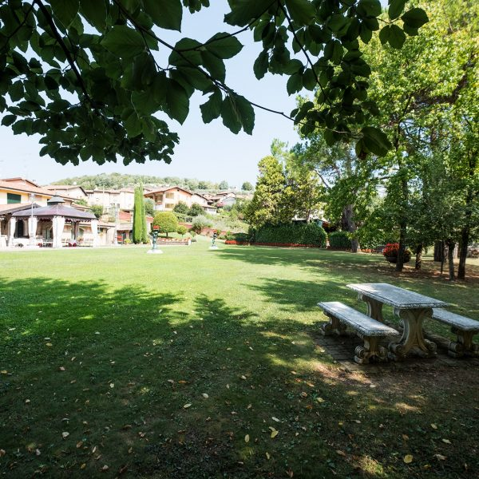
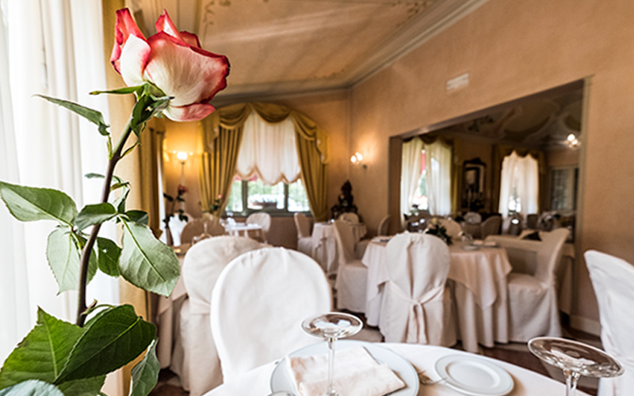

01 / ENOGASTRONOMIA
Vigneti e cantine
Un paesaggio legato alla cultura del vino e alle esperienze nel territorio.

Da Ome, un invito a conoscere i paesaggi e le atmosfere di questo territorio.
Ome è un punto di partenza per conoscere i paesaggi e le tradizioni della Franciacorta.
Tra il verde delle colline e le testimonianze del passato, ogni visita offre l'occasione per rallentare e osservare il carattere di questi luoghi.

Cantine, passeggiate tra i vigneti, borghi, ville storiche e il vicino Lago d’Iseo sono alcune delle esperienze raccontate nel sito storico.
Un paesaggio legato alla cultura del vino e alle esperienze nel territorio.
Architetture, luoghi e tradizioni da conoscere passeggiando nei dintorni.
Un'altra occasione per scoprire la varietà dei paesaggi vicini alla Franciacorta.
Questi sono spunti di visita, non itinerari organizzati da Villa Carpino. Le immagini territoriali originali con numeri sovrapposti non sono state utilizzate nel prototipo.

Dopo una giornata alla scoperta del territorio, la villa invita a ritrovarsi a tavola in un ambiente elegante.
Scopri il ristorante ↗